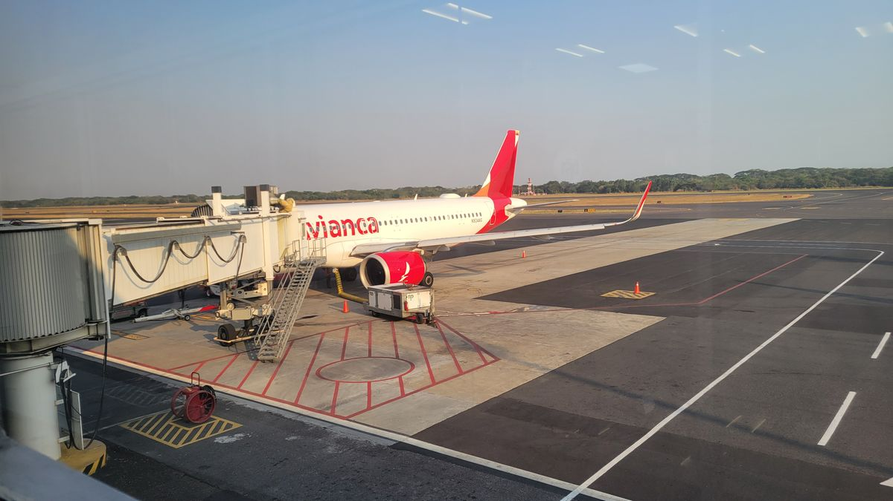
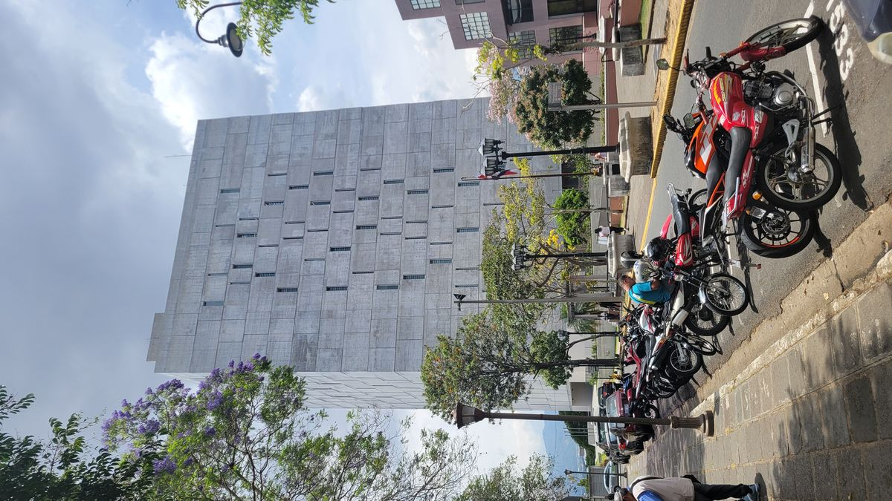
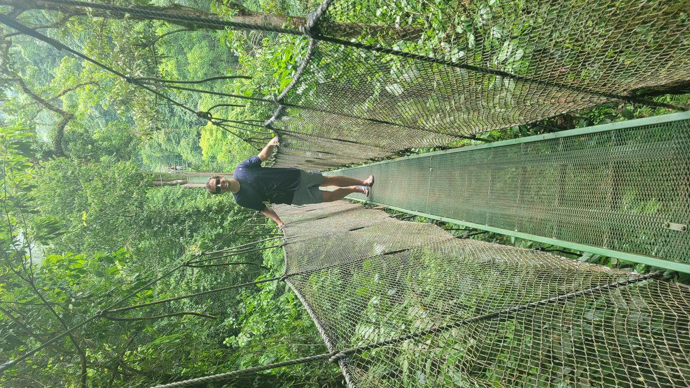
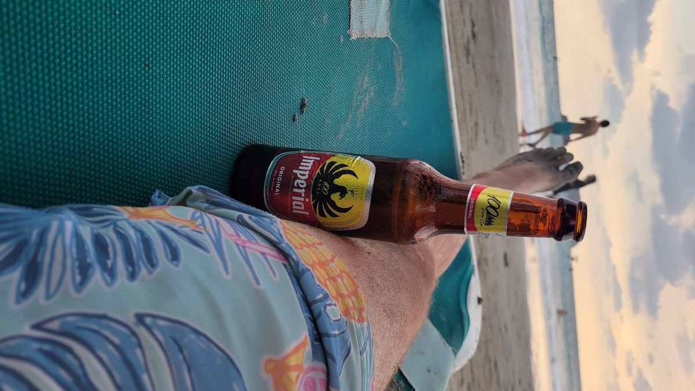
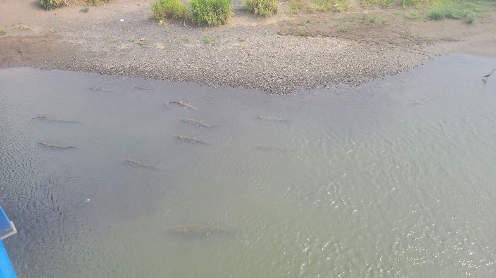

Manuel Antonio

I cheated; I suppose. That is if there were a hard set of rules to follow, but since I get to make them up as I go along, I also say what I did was valid. As I’ve mentioned earlier, when I departed on this journey earlier this year, my first goal was to visit every country in Central America. I actually booked a ticket from Panama to another region of the world for the beginning of May, hoping to leave just as the rainy season was beginning. Mexico to Panama in 4 months I now realize is a fool’s errand. At the pace I was going, that would take me probably closer to a year if I were to give yourself 1 month in each country. I wouldn’t want to do less than that anyways for a journey of this magnitude. I had already skipped Belize and as I sit in an AirBnb in El Salvador planning the coming weeks I ask myself if rushing through the rest of the isthmus is worth it. I decide it isn’t. Staying longer isn’t the best option either as the rainy season makes ground travel more difficult in certain regions and the tourism sector really slows down after American schools finnish their Spring Breaks in April. I found a good deal using Credit Card points on a flight from El Salvador to San José, Costa Rica. I decide to skip Honduras and Nicaragua this time. They will be there when I came back someday. I’ll just do Costa Rica and Panama and leave as planned. I arrived late in evening into San Jose Airport and seeing just how uninspiring another Latin American capital city can be, I took off for more inspiring areas.

Costa Rica isn’t the cheapest country in Central America. Actually, that was even a stupid thing to say, because it is bar far the most expensive country in Central America. The American and Canadian tourist sector has been the main driver of the Costa Rican economy for decades and the industry knows exactly what we will pay. But, I honestly believe it is worth every penny. The country has branded itself as an eco-friendly tourist destination with its natural wonders being the main driver of the industry. Ticos (the demonym Costa Ricans call themselves, because the grammatically correct Costaricences is difficult to say even for a native Spanish Speaker), take that to heart and take immaculate care of their country. When travelling through the region you will notice that trash collection isn’t high on many places list of priorities. But, in Costa Rica you can drive for hours through even the most rural areas without seeing even a misplaced candy wrapper or soda can. The bigger cites of course aren’t as immaculate but, still leaps and bounds better than their counterparts in the region.
I spent my first week in Manuel Antonio, a beach destination on the countries Pacific Coast. I knew this town well, as I had been here before. I came in 2017 and absolutely loved the area. I eagerly awaited my opportunity to return and this desire is probably what fueled my decision to cut out 2 countries entirely. What I forgot to realize was the week I choose to arrive in Costa Rica was Semana Santa, or the Catholic Holy week of Easter. Most if not all countries in Latin America are officially Catholic nations and most take the entire week off, or atleast Wednesday to Friday. The beaches become packed with Latinos taking a deserved Spring Break. While last minute reservations were hard to come by, I made it work, even if it meant a little splurging on the budget.
What I like about Manuel Antonio is that while, its heavily touristed area, you won’t find the major western brands like Hilton and Hyatt here. And if any of the hotels here are owned by those companies, they hide it well. Instead, you just find dozens and dozens of well-kept boutique hotels and resorts that really make you feel somewhere exotic while still providing all the luxuries you can desire on beach vacation.


Unfortunately, since I didn’t do my homework on Latin American holidays before doing this the main attraction of the area, Manuel Antonio National Park was completely booked for the week, and had been for a number of weeks before I arrived. Not a deal breaker, the area still offers plenty to do, even if sometimes that just relaxing in a beach chair with an Imperial Beer and a good book. A jungle trek using hanging bridges filled nature gap left by missing a reservation at the National Park and a day tour and lunch as the larger town of Quepos gave you your fill of culture. After a few days, I packed my bags yet again and took off for other locales.
